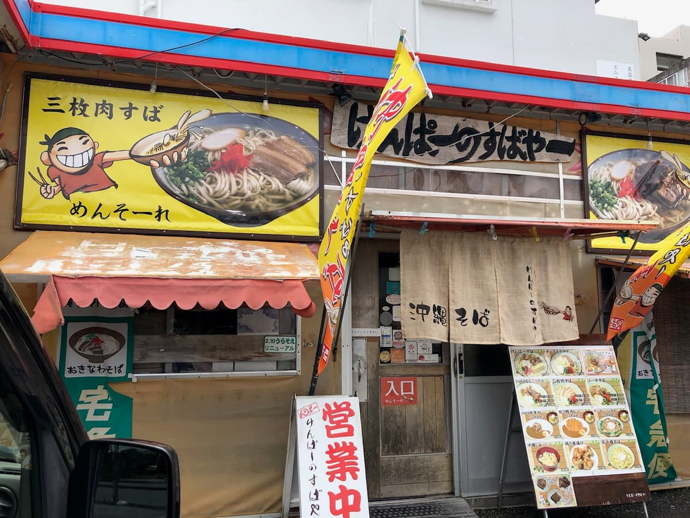
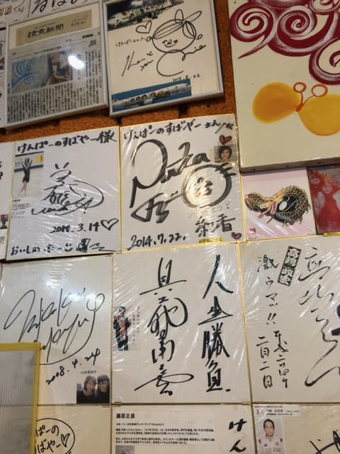
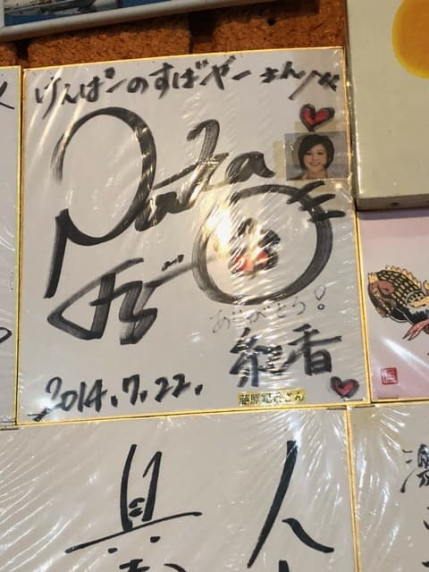
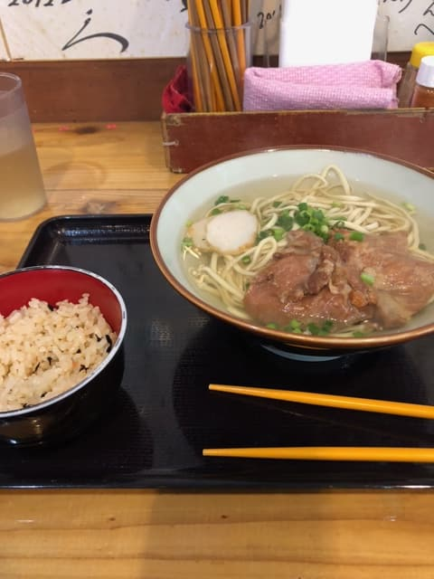
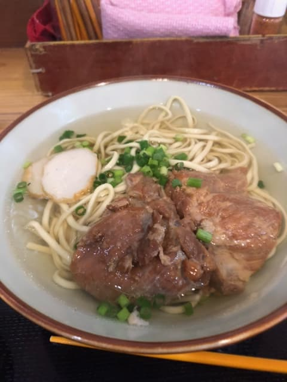
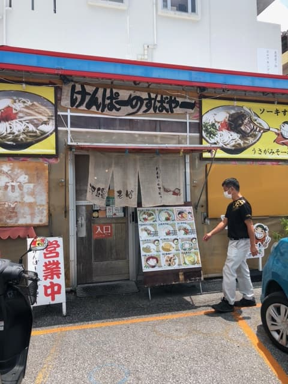
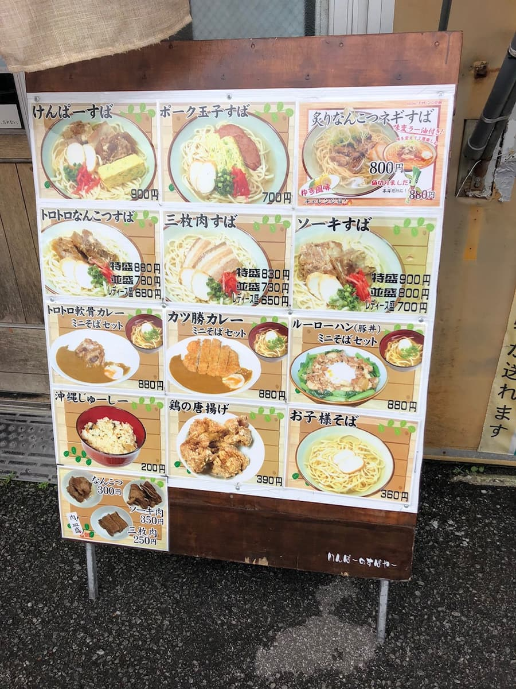
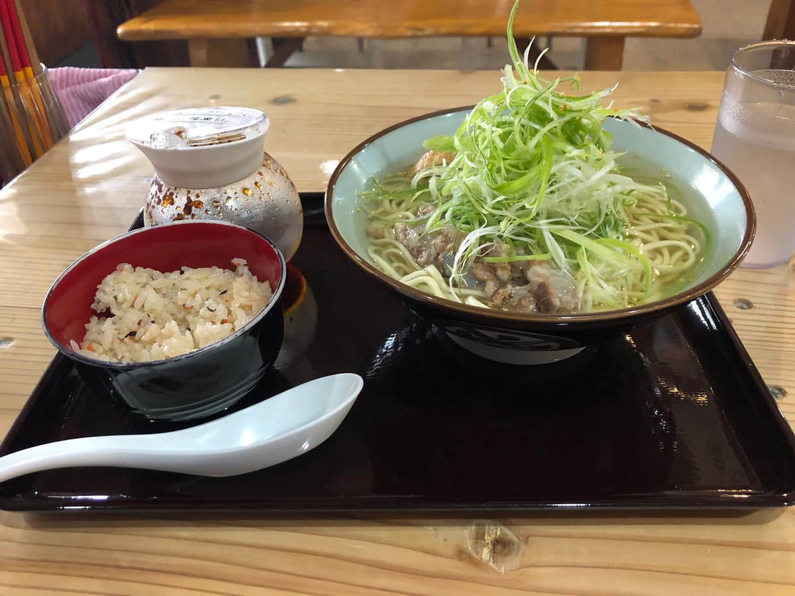

― 2회째 방문(2023년 8월) ―
2023년 8월에 먹으러 갔습니다😊 이곳은 지난번 이후 약 1년 만이에요😁
사실은 아직 한 번도 먹어 본 적 없는 오키나와 소바 가게에 가고 싶어서 차로 북부에서 남부 방면으로 달리며 찾고 있었는데, 결국 볼일 시간도 다가와서, 지난번에 먹고 보통으로 맛있었던 이곳에 들어가기로 했어요 ㅋㅋ

점심시간이라 현지 손님과 관광객으로 북적였고 시간도 없어서 순간 “꽤 시간이 걸리려나? 나갈까?” 하고 생각했지만, “아슬아슬하게 시간 맞으려나?” 싶어서 식권 발매기 앞에서 “연골 소바(보통)”를 주문했어요.
그 뒤에 벽 쪽 카운터 자리를 잡았어요.
지난번에 먹었을 때는 별로 신경 쓰이지 않았는데(관찰력이 너무 없네(^_^;)), 벽에는 현 출신 유명인과 저명인의 사인이 엄청 많이 붙어 있다는 걸 알아챘어요(^_^;)

하나씩 사인을 보다가 퍼뜩 눈에 들어온 건, 사인 시기는 오래되었지만 무려 후지와라 노리카 씨의 사인이었어요😊
※지금 블로그를 쓰면서 알아챘는데, 후지와라 노리카 씨 아래에 붙어 있는 사인은 존경하는 “관머리수리”라는 별명을 가진 오키나와 현민의 스타, 전 복싱 세계 챔피언 구시켄 요코 씨였어요(^_^;)

저보다 앞에도 몇 명이 주문해서 꽤 시간이 걸리려나 하고 각오하고 있었는데, 벽에 붙은 사인을 잠깐 바라볼 정도의 시간에 주문한 “연골 소바(보통)”가 나왔어요.
후딱 주문하고 후딱 나오는 이 스피드감은 좋네요✌ 평가가 올랐어요😁
다른 가게 이야기지만, 과거에는 인기 가게라 해도 주문하고 나서 꽤 시간이 걸린 오키나와 소바 가게도 경험해 봤기 때문에 아주 좋은 인상을 받았어요😊


지난번과 마찬가지로 이 투명감 있는 국물과 가는 면은 “켄파노 스바야”답고 좋네요. 먼저 정석인 국물을 한 모금, 여전히 가쓰오 육수가 우러난 맛있는 국물이라 틀림없어요😊
면도 보통으로 맛있어요. 담백한 가쓰오 육수 국물을 만끽한 뒤에는, 테이블에 놓인 켄파 씨의 코레구스(고추 아와모리)를 넣어서 맛을 바꿔 봅니다.
이쪽도 보통으로 맛있어요😋 이번에는 고명인 연골 돼지갈비로. 부드럽고 맛도 보통으로 맛있지만, 엄청 녹아내리는 느낌은 아니고, 힘줄이 많은 연골 돼지갈비도 들어 있어서 씹는 맛이 있고, 이 사이에 힘줄 고기가 끼는 느낌이라 이쑤시개 신세도 졌어요(^_^;)
평가(10점/15점): 보통으로 맛있어요😊 역시 최근 물가 상승으로 1년 전보다는 가격이 오른 것 같아요. 연골 돼지갈비는 약간 힘줄이 많은 느낌이라, 저는 이에 낀 고기를 빼느라 이쑤시개가 필요했어요 ㅋㅋ 보통으로 맛있다고 생각하니, 나하 신도심에 관광 등으로 오실 때 어떠세요?
면: ★★★✬☆（3.5）
수프: ★★★☆☆（3）
토핑: ★★★✬☆（3.5）
― 1회째 방문(2022년 5월) ―
2022년 5월에 먹으러 갔습니다😊
공식 사이트에는 [저희 소바 만들기의 콘셉트는 ‘조화’입니다. 조화로운 맛을 내기 위해 몇 번이고 실패를 되풀이하면서도 포기하지 않고 타협하지 않고 마침내 도달한, 돼지·가쓰오·소금의 부동의 황금비.
이틀에 걸쳐 완성하는 황금(쿠가니) 국물은 투명하면서도 깊은 맛이 있고, 은은하게 풍기는 가쓰오의 풍미와 절묘한 소금 간, 혼신의 힘을 쥐어짜 만들어 낸 영혼의 한 그릇입니다.]라고 적혀 있어요.
국물에 대한 고집이 있네요😊

“구운 연골 파 소바”를 주문.


다른 가게에서는 별로 보기 힘든 투명하고 맑은 국물은 가쓰오 육수의 순한 맛. 국물을 절반쯤 마신 뒤에는 자가제 라유로 맛을 바꿔 즐겨요😊 맛의 변화는 좋은 포인트가 되네요 ㅋㅋ 면도 라멘풍의 가는 면 타입으로 보통으로 맛있어요.
평가(9점/15점): 보통으로 맛있어요😊 신도심에 관광 등으로 오실 때 어떠세요?
면: ★★★☆☆（3）
수프: ★★★☆☆（3）
토핑: ★★★☆☆（3）